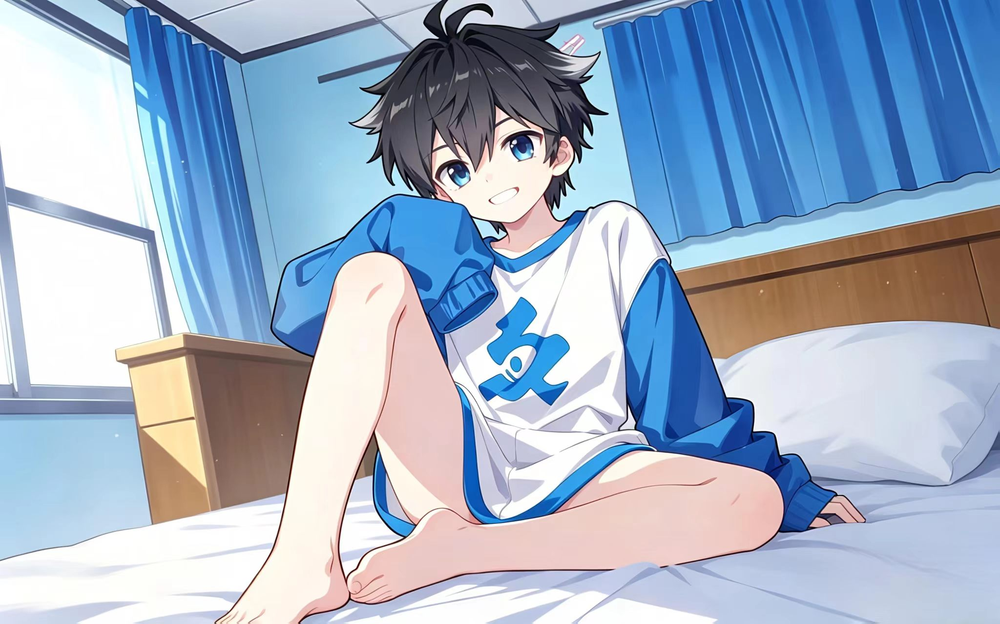
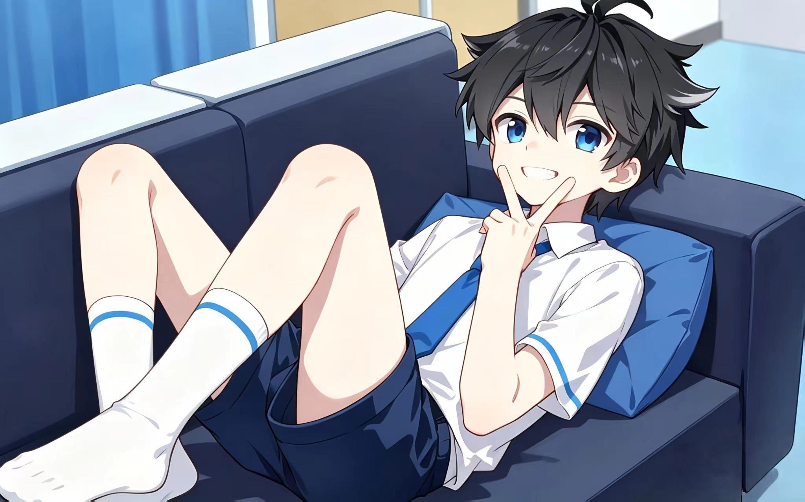
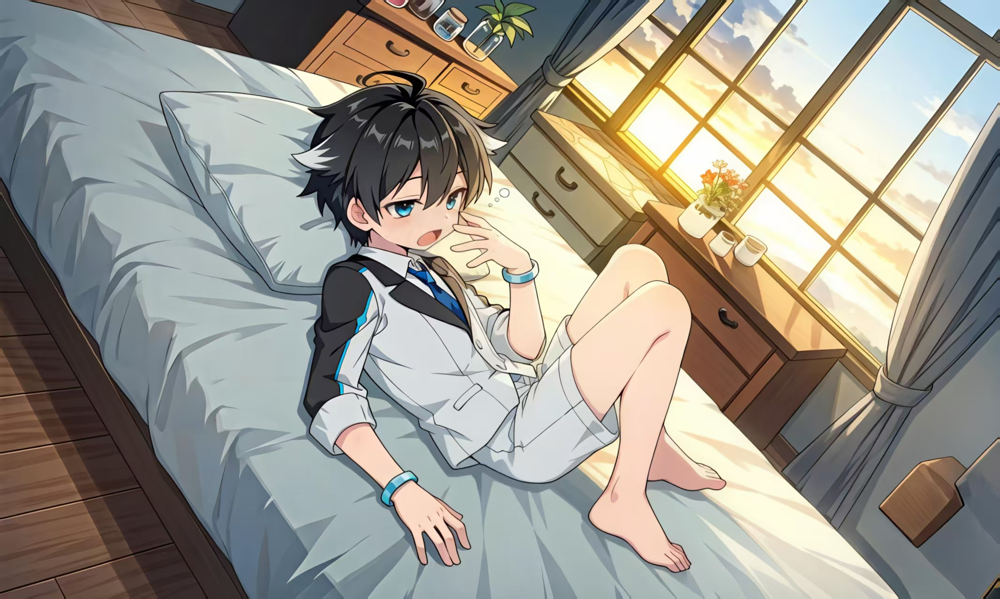

蓝轩宇



基本信息
- 中文名：蓝轩宇(后改名唐轩宇)
- 出处：《斗罗大陆4终极斗罗》
- 声优：降温
- 身份：海神阁阁主继承人、史莱克七怪首席、第二代龙神
角色简介
对朋友真诚纯善，领导能力突出，擅长靠智慧与洞察力带领伙伴取胜，而非单纯依靠实力。
"我只是要告诉你们，我有多优秀，而已"<——返回首页 <——返回角色图鉴



对朋友真诚纯善，领导能力突出，擅长靠智慧与洞察力带领伙伴取胜，而非单纯依靠实力。
"我只是要告诉你们，我有多优秀，而已"<——返回首页 <——返回角色图鉴